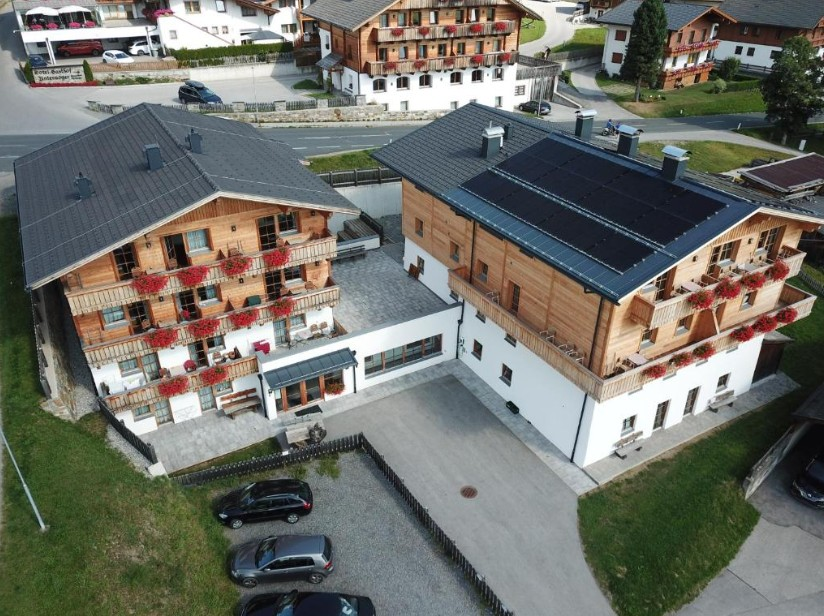

D1
Utorok
14. júl 2026
Príchod do Außervillgraten
Ferienwohnung Eichhorner — Dorf 33, 9931 Außervillgraten.
Príchod 16:00–22:00 · Odchod 8:00–10:00 (15.7.)
Rodinný roadtrip cez Rakúske Alpy do srdca Dolomitov a Benátska
14. — 22. júl 2026 · 9 dní · 2 dospelí + 2 deti

Prvá zastávka cez Východný Tirolsko. Dedinka v údolí Villgratental, ideálna prestávka pred prejazdom do Dolomitov.

Ferienwohnung Eichhorner — Dorf 33, 9931 Außervillgraten.
Príchod 16:00–22:00 · Odchod 8:00–10:00 (15.7.)
Srdce Dolomitov pri Cortine d'Ampezzo. Tri dni medzi tyrkysovými jazerami, panoramatickými priesmykmi a obľúbenými lanovkami.
SS.51 di Alemagna, km 88, 32040 Borca di Cadore
15.7. (príchod 15:00–22:00) → 17.7. (odchod do 10:00) · 478 €
Cesta cez priesmyky Východných Álp do Dolomitov. Po príchode poobedný odpočinok a obhliadka okolia apartmánu.
🧭 Navigácia trasy


Tyrkysové jazero v srdci Dolomitov. Cestou SR48 z Cortiny d'Ampezzo na priesmyk Passo delle Tre Croci — pri otvorenom hoteli B&B začína turistický chodník.
Jeden z najkrajších horských priesmykov v Dolomitoch. Z Borca di Cadore ~35 km / 50 min. Z parkoviska máš 360° výhľad bez potreby túry — možnosť 3–4 h prechádzky.
Historický múr Muraglia di Giau hneď pri ceste.


„Povinná jazda" — lanovka štartuje priamo v Cortine a v troch etapách ťa vyvezie až do 3 244 m n. m. Cena cca 35 € / osoba.
Po návrate z Tofany odchod z apartmánu do 10:00 a presun do Treviso (~2 h jazdy).
5 nocí v Trevise s denným plánom: pláže Jesolo a Caorle, výlety vlakom do Benátok a Padovy.

17.7. (príchod od 15:00) → 22.7. (odchod do 10:00) · 632 €
Vzdialenosť 1,7 km od železničnej stanice Treviso Centrale (~20–25 min pešo). Priame vlaky do Benátok cca 25 min.
Dlhá piesočnatá pláž s plytkým vstupom — ideálna pre deti. Pre rodinu (2+2) stačí 1 štandardné miesto: 1 slnečník + 2 ležadlá. Parkovanie zvyčajne v cene rezervácie.
| Poloha | Pracovný deň | Víkend / sviatok |
|---|---|---|
| Zadné rady | 18 € | 21 € |
| Stred pláže (5.–8. rad) | 20,50 € | 24 € |
| Pri mori (1. rad) | 28 € | 32 € |
Oproti Jesolu má Caorle veľkú časť pláží voľne prístupných — môžeš si priniesť vlastný slnečník zadarmo. Set ležadiel mimo 1. rady stojí cca 20–35 €, prémiové miesta 30–50 €.
Pre rodinu odporúčam:

Z Treviso Centrale priamy vlak na Venezia Santa Lucia — jazda ~25 min, 30+ spojov denne, lístok 4–6 €.
Pešia trasa: stanica → Rialto → Piazza San Marco → Dóžov palác → Most vzdychov → Santa Maria della Salute → späť. Cca 6–7 km, pohodové tempo s prestávkami.
🧭 Kompletná pešia trasa na Google MapsMost pred stanicou Santa Lucia, prvý pohľad na Canal Grande.
Hlavná vodná tepna mesta.
Najznámejší most v Benátkach, výhľad zhora.
Historický trh s rybami a zeleninou, najlepšie dopoludnia.
Špirálové schodisko s výhľadom na strechy.
Srdce Benátok, najznámejšie námestie.
Byzantská bazilika s nádherným interiérom.
Bývalé sídlo dóžov — top platená pamiatka.
Spája palác s bývalou väznicou.
Monumentálny kostol pri ústí Canal Grande.
Prechádzka historickým centrom Treviso (rezerva podľa nálady detí) alebo druhá návšteva obľúbenej pláže.
V posledný deň odchod z apartmánu do 10:00. Padova je možná ako prvá zastávka po ceste alebo ako celodenný výlet v predchádzajúci deň.
Najväčšie námestie v Taliansku, otvorený priestor s kanálom a sochami.
Hlavné pútnické miesto, románsko-gotický komplex.
Najstaršia univerzitná botanická záhrada (1545), UNESCO.
Univerzita Padova (1222), slávne Anatomické divadlo.
Živé trhové námestie, kaviarne, večerný život.
Vedľajšie trhové námestie, lokálny vibe.
Stredoveká hala medzi námestiami, fresky.
Historická kaviareň z 19. storočia, symbol Padovy.
Elegantné námestie s astronomickými hodinami.
Stredoveká veža s astronomickým ciferníkom.
Pri Sorapis aj Passo Giau prísť skoro ráno — miesta sa rýchlo zaplnia. Pri preplnení vrátiť sa do Cortiny.
Treviso Centrale ~25 min do Venezia Santa Lucia. Lístky kupuj cez TheTrainline alebo priamo na stanici.
1 slnečník + 2 ležadlá stačí, deti sú na osuške. Caorle má bezplatné pláže, do Jesola treba rezerváciu.